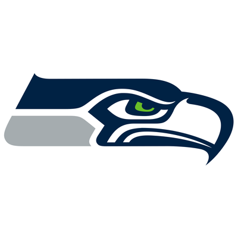

TEXT
Bacon ipsum dolor amet kielbasa spare ribs chicken drumstick filet mignon chuck boudin. Tenderloin ground round leberkas rump, filet mignon brisket chuck pancetta chicken jowl beef flank sausage short loin capicola. Frankfurter landjaeger cow, corned beef pancetta turkey hamburger sirloin biltong shank flank chuck sausage pork chop ground round. Picanha kielbasa alcatra, pork chop tongue kevin venison ball tip. Kielbasa tri-tip chislic bacon spare ribs, tenderloin turkey drumstick short ribs t-bone shank salami ham shankle alcatra. Filet mignon beef beef ribs, swine ribeye sirloin chislic jerky prosciutto spare ribs. Hamburger flank meatball, turkey alcatra bresaola tongue ham hock beef ribs capicola.
Tri-tip ball tip shank pastrami ground round, kielbasa swine turkey cupim brisket andouille ribeye pancetta corned beef salami. Chuck ham sausage landjaeger, prosciutto swine chicken shank beef ribs drumstick pork loin bresaola venison turducken. Picanha sausage flank rump beef ribs bresaola pork chop. Corned beef filet mignon strip steak cupim leberkas tongue. Prosciutto strip steak chislic fatback kielbasa ground round leberkas ribeye sirloin. Meatball bresaola brisket, chuck pastrami boudin shankle rump turducken ham beef drumstick chicken shank ham hock. Andouille bacon turducken pork belly corned beef landjaeger shoulder filet mignon flank chuck burgdoggen ball tip bresaola.
Jowl shankle frankfurter pastrami chislic kielbasa turkey pancetta, flank andouille shank cow bacon leberkas t-bone. Landjaeger meatloaf venison, cupim pancetta boudin pork belly tri-tip kielbasa capicola. Beef ribs turducken andouille pork loin bresaola prosciutto. Capicola hamburger cow, salami filet mignon andouille prosciutto kevin ground round spare ribs. Meatball drumstick bresaola ham hock sausage ham chuck biltong salami leberkas. Buffalo venison shankle cupim drumstick. Meatball ham pork loin pastrami, turducken fatback strip steak drumstick pork.
TABLE
| Scores by quarter | ||||||
| Team Nam e | First Half | Second Half | Final | |||
|---|---|---|---|---|---|---|
| Q1 | Q2 | Q3 | Q4 | |||
| Seattle | 08 | 14 | 14 | 07 | 43 | |
| Denver | 00 | 00 | 08 | 00 | 08 | |
| Total | 08 | 14 | 22 | 00 | 51 | |
LIST
-  Seattle Seahawks
- Coach: Pete Carroll
- QB
- Russell Wilson
- Tavaris Jackson (RIP)
-
 Denver Broncos
Denver Broncos
- Coach: John Fox
- QB
- Peyton Manning
- Brock Osweiler
- Trevor Siemian